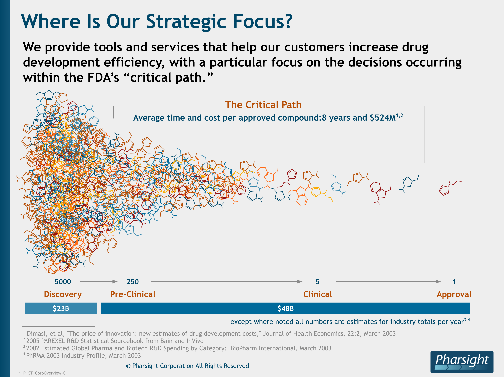
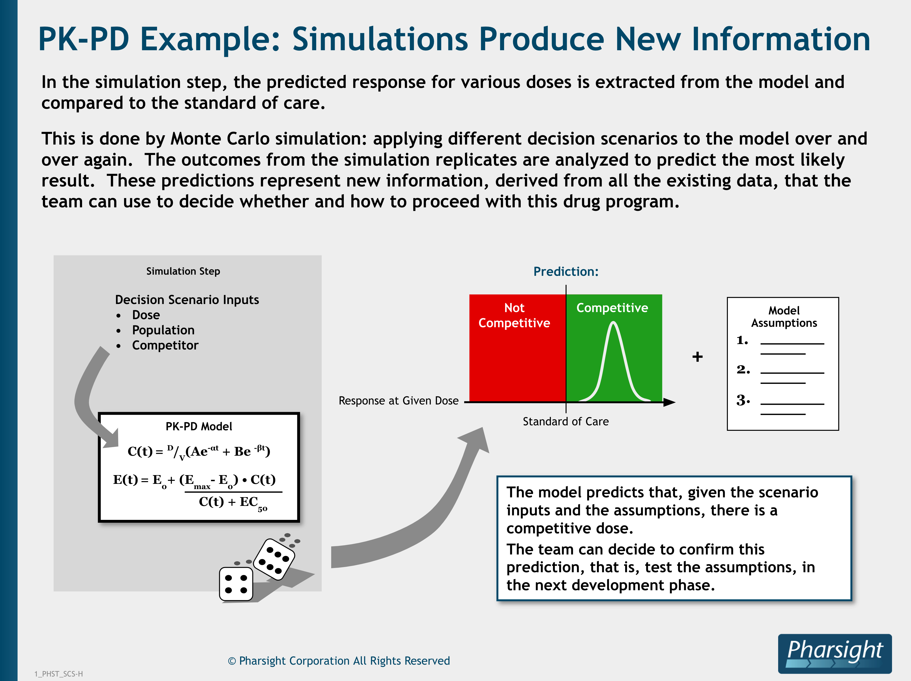

Hi! I'm Tim. I want to help you build your virtual mission control.


My passion is creating tools that help people manage complex systems.
Security Dashboard

I’ve designed experiences for users of varying technical levels across many different domains.
Analytic Notebook

I excel at this work by meeting users where they are.
IoT Fleet Setup

Right now I am looking for new fulltime leadership opportunity with an experienced team working to operationalize a complex system management problem in the area of logistics, manufacturing, alternative energy or ecological health.
I will bring design craft to your team and hit the ground running. Beyond user experience, I have expert-level understanding of system thinking, machine learning, networks, high scale compute, and biological systems.
Portfolio
Customer Relationship Management Platform
My recent work at Salesforce has been focused on developer experience (DX). I've designed a a project-based, VCS-backed change and release management experience that enables low and pro code developers to collaborate. Previously I worked on our IoT product as well as managed our design system team.
Story telling is a superpower.

Source control for low code users.

Full transaction transparency for trust.

Release Pipeline

IoT onboarding

Debugging Experience
IoT monitoring for customer case management.


Streaming Analytics Platform
At this streaming data analytics start up I built a design studio of 5 that executed all design work for product and marketing.
I acted as player/coach managing and growing my team, directing the overall creative output of my studio, leading detailed design projects and providing the executive team with UX strategy.
Website for Product Led Growth

Data Integration GUI
Data Explorer

Declarative Charting Syntax

Business Intelligence Platform
I improved the user experience at this BI start up by introducing a faceted search functionality and a modern look & feel. The new UI framework I designed and coded was standards-compliant and easily-themed to support our white label business model.
A standards-compliant, themeable UI for our white label business model.


Content Delivery Network Self Service Application
I collaborated with a great team at Hot Studio to work on the redesign of Akamai's self-service portal. I contributed to the user research, UX strategy and design that led to a much easier to understand navigational model for the experience.
CDN Monitoring & Configuration.

IoT Platform
I contracted with GE during the development of their Predix IoT platform to bring structured, repeatable user-centered methods into all stages of their Agile cycle. I piloted the process successfully, consolidated the win by mentoring a young designer succeed me and was gratified to see other scrum teams begin requesting dedicated UX support.
e-commerce platfrom
At Apple I worked on search and community features for our online store.


Pharmacokinetic Modeling & Simulation
At this start up I designed machine learning software and produced materials for sales & marketing that explained the concepts and statistics behind predictive modeling.
Modeling & Simulation Software

The Critical Path for Drug Developoment
How Modeling Works

How Simulation Works
